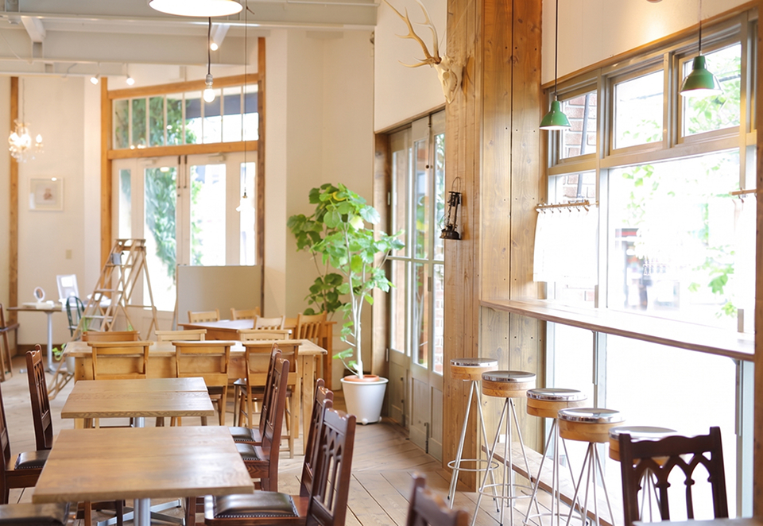
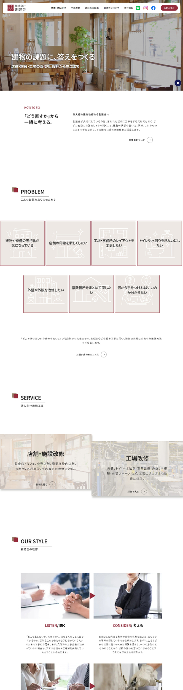
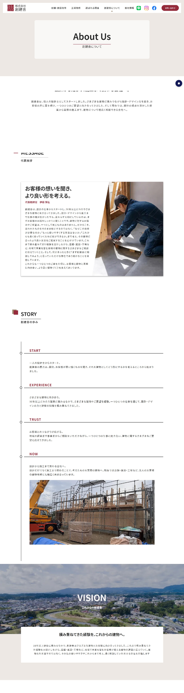
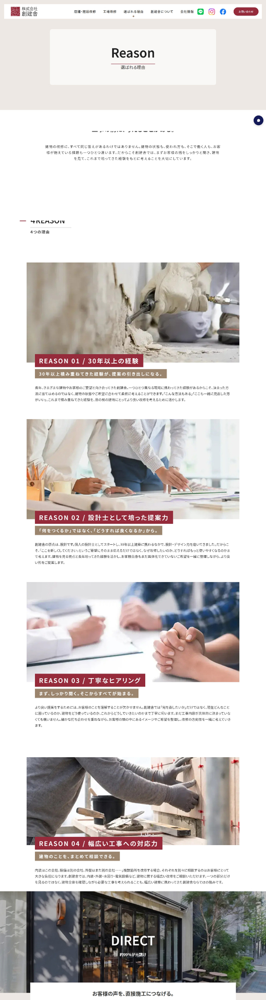
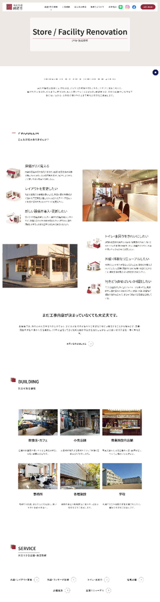

担当範囲
ワイヤーフレーム設計 / デザイン
外注様へコーディング指示
ライティング

ワイヤーフレーム設計 / デザイン
外注様へコーディング指示
ライティング
個人・法人からの新規問い合わせ増加
約1ヶ月
Figma / Photoshop
HTML / CSS / JavaScript
福島県いわき市を拠点に、店舗・施設・工場などの改修を手掛ける企業様のコーポレートサイトを制作しました。 30年以上にわたり建築と向き合ってきた経験と、設計士として培ってきた提案力を軸に、単に「工事ができる会社」ではなく、お客様の話を聞き、建物の課題を整理し、より良い改修方法を一緒に考えられる会社であることが伝わるサイトを目指しています。
30年以上にわたり建築と向き合い、設計から施工まで幅広く携わってきた企業様。長年培ってきた「確かな経験と信頼」を土台に、店舗・施設・工場など法人のお客様に向けて、建物の課題を一緒に考え、より良い形へ導く「提案力のある建築会社」としての魅力が伝わるデザインを目指しました。 サイト全体は、企業様のブランドイメージを印象づける深みのある赤紫をメインカラーに、温かみを感じるオフホワイトやグレージュを組み合わせています。真っ白な背景だけで構成するのではなく、柔らかな色味を取り入れることで、30年以上の歴史を持つ企業としての落ち着きや重厚感を表現。 一方で、余白を活かしたすっきりとしたレイアウトによって、昔ながらの建築会社という印象に寄りすぎない、現代的で洗練された雰囲気に仕上げています。
COLOR
#962B3C#9B856F#EDE8E4#F8F5F3TYPOGRAPHY
AaNoto Sans JP
可読性の高い書体を採用。




「何を相談できる会社なのか」をひと目で伝える。従来の住宅中心の印象ではなく、店舗・施設・工場を所有・管理する法人のお客様に向けたサイトとして再構成。「店舗・施設改修」と「工場改修」を主要サービスとして明確に分け、内装・外装・水回り・電気設備など、対応できる工事を具体的に紹介。
施工力だけではなく、創建舎ならではの考える力を伝える。創建舎様の強みである、きめ細かな打ち合わせと「聞く＋提案力」に着目。ご要望をそのまま施工するのではなく、30年以上の経験をもとに、その先の使いやすさまで考えて提案する姿勢をコンテンツへ落とし込む。
重厚感は残しながら、古さを感じさせないデザインに。赤紫をキーカラーに、温かみのあるオフホワイトや落ち着いた色調を組み合わせ、30年以上積み重ねてきた経験や企業としての信頼感を表現。余白を活かしたレイアウトや写真の見せ方によって、建築会社らしい堅実さと、設計・提案を得意とする創建舎様らしい洗練性を両立。ディレクション資料で示された「実績があるしっかりとした印象」「重厚感」「簡素すぎない」という方向性も反映。